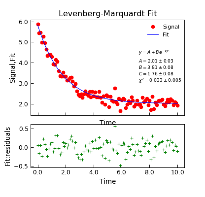
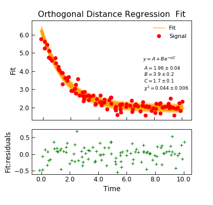

FittingMixin¶
-
class
Stoner.analysis.fitting.FittingMixin[source]¶ Bases:
objectA mixin calss for
Stoner.Core.DataFileto provide additional curve_fiotting methods.Methods Summary
annotate_fit(model[, x, y, z, text_only])Annotate a plot with some information about a fit.
curve_fit(func[, xcol, ycol, sigma])General curve fitting function passed through from scipy.
differential_evolution(model[, xcol, ycol, …])Fit model to the data using a differential evolution algorithm.
lmfit(model[, xcol, ycol, p0, sigma])Wrap the lmfit module fitting.
odr(model[, xcol, ycol])Wrap the scipy.odr orthogonal distance regression fitting.
polyfit([xcol, ycol, polynomial_order, …])Pass through to numpy.polyfit.
Methods Documentation
-
annotate_fit(model, x=None, y=None, z=None, text_only=False, **kargs)[source]¶ Annotate a plot with some information about a fit.
- Parameters
mode (callable or lmfit.Model) – The function/model used to describe the fit to be annotated.
- Keyword Parameters:
- x (float):
x co-ordinate of the label
- y (float):
y co-ordinate of the label
- z (float):
z co-ordinbate of the label if the current axes are 3D
- prefix (str):
The prefix placed ahead of the model parameters in the metadata.
- text_only (bool):
If False (default), add the text to the plot and return the current object, otherwise, return just the text and don’t add to a plot.
- prefix(str):
If given overridges the prefix from the model to determine a prefix to the parameter names in the metadata
- Returns
(Datam, str) – A copy of the current Data instance if text_only is False, otherwise returns the text.
If prefix is not given, then the first prefix in the metadata lmfit.prefix is used if present, otherwise a prefix is generated from the model.prefix attribute. If x and y are not specified then they are set to be 0.75 * maximum x and y limit of the plot.
-
curve_fit(func, xcol=None, ycol=None, sigma=None, **kargs)[source]¶ General curve fitting function passed through from scipy.
- Parameters
func (callable, lmfit.Model, odr.Model) – The fitting function with the form def f(x,*p) where p is a list of fitting parameters
xcol (index, Iterable) – The index of the x-column data to fit. If list or other iterable sends a tuple of x columns to func for N-d fitting.
ycol (index, list of indices or array) – The index of the y-column data to fit. If an array, then should be 1D and the same length as the data. If ycol is a list of indices then the columns are iterated over in turn, fitting occuring for each one. In this case the return value is a list of what would be returned for a single column fit.
- Keyword Arguments
p0 (list, tuple, array or callable) – A vector of initial parameter values to try. See notes below.
sigma (index) – The index of the column with the y-error bars
bounds (callable) – A callable object that evaluates true if a row is to be included. Should be of the form f(x,y)
result (bool) – Determines whether the fitted data should be added into the DataFile object. If result is True then the last column will be used. If result is a string or an integer then it is used as a column index. Default to None for not adding fitted data
replace (bool) – Inidcatesa whether the fitted data replaces existing data or is inserted as a new column (default False)
header (string or None) – If this is a string then it is used as the name of the fitted data. (default None)
absolute_sigma (bool) – If False, sigma denotes relative weights of the data points. The default True means that the sigma parameter is the reciprocal of the absoluate standard deviation.
output (str, default "fit") – Specifiy what to return.
- Returns
(various) –
- The return value is determined by the output parameter. Options are:
- ”fit” (tuple of popt,pcov) Optimal values of the fitting parameters p, and the
variance-co-variance matrix for the fitting parameters.
- ”row” just a one dimensional numpy array of the fit paraeters interleaved with their
uncertainties
”full” a tuple of (popt,pcov,dictionary of optional outputs, message, return code, row).
- ”data” a copy of the
Stoner.Core.DataFileobject with fit recorded in the metadata and optionally as a new column.
- ”data” a copy of the
Note
If the columns are not specified (or set to None) then the X and Y data are taken using the
Stoner.Core.DataFile.setasattribute.The fitting function should have prototype y=f(x,p[0],p[1],p[2]…) The x-column and y-column can be anything that
Stoner.Core.DataFile.find_col()can use as an index but typucally either strings to be matched against column headings or integers. The initial parameter values and weightings default to None which corresponds to all parameters starting at 1 and all points equally weighted. The bounds function has format b(x, y-vec) and rewturns true if the point is to be used in the fit and false if not.The absolute_sigma keyword determines whether the returned covariance matrix pcov is based on estimated errors in the data, and is not affected by the overall magnitude of the values in sigma. Only the relative magnitudes of the sigma values matter. If True, sigma describes one standard deviation errors of the input data points. The estimated covariance in pcov is based on these values.
The starting vector p0 can be either a list, tuple or array, or a callable that will produce a list, tuple or array. IF callable, it should take the form:
- def p0_func(ydata,x=xdata):
and return a list of parameter values that is in the same order as the model function. If p0 is not given and a
lmfit.Modelorscipy.odr.Modelis supplied as the model function, then the model’s estimates of the starting values will be used instead.See also
-
differential_evolution(model, xcol=None, ycol=None, p0=None, sigma=None, **kargs)[source]¶ Fit model to the data using a differential evolution algorithm.
- Parameters
model (lmfit.Model) – An instance of an lmfit.Model that represents the model to be fitted to the data
xcol (index or None) – Columns to be used for the x data for the fitting. If not givem defaults to the
Stoner.Core.DataFile.setasx columnycol (index or None) – Columns to be used for the y data for the fitting. If not givem defaults to the
Stoner.Core.DataFile.setasy column
- Keyword Arguments
p0 (list, tuple, array or callable) – A vector of initial parameter values to try. See the notes in
Stoner.Data.curve_fit()for more details.sigma (index) – The index of the column with the y-error bars
bounds (callable) – A callable object that evaluates true if a row is to be included. Should be of the form f(x,y)
result (bool) – Determines whether the fitted data should be added into the DataFile object. If result is True then the last column will be used. If result is a string or an integer then it is used as a column index. Default to None for not adding fitted data
replace (bool) – Inidcatesa whether the fitted data replaces existing data or is inserted as a new column (default False)
header (string or None) – If this is a string then it is used as the name of the fitted data. (default None)
scale_covar (bool) – whether to automatically scale covariance matrix (leastsq only)
output (str, default "fit") – Specifiy what to return.
- Returns
( various ) –
- The return value is determined by the output parameter. Options are
- ”fit” just the
lmfit.model.ModelFitinstance that contains all relevant information about the fit.
- ”fit” just the
- ”row” just a one dimensional numpy array of the fit paraeters interleaved with their
uncertainties
”full” a tuple of the fit instance and the row.
- ”data” a copy of the
Stoner.Core.DataFileobject with the fit recorded in the emtadata and optinally as a column of data.
- ”data” a copy of the
This function is essentially a wrapper around the
scipy.optimize.differential_evolution()funtion that presents the same interface as the other Stoner package curve fitting functions. The parent function, however, does not provide the variance-covariance matrix to estimate the fitting errors. To work around this, this function does the initial fit with the differential evolution, but then uses that to give a starting vector to a call toscipy.optimize.curve_fit()to calculate the covariance matrix.See also
Example
"""Simple use of lmfit to fit data.""" from numpy import linspace, exp, random from Stoner import Data # Make some data x = linspace(0, 10.0, 101) y = 2 + 4 * exp(-x / 1.7) + random.normal(scale=0.2, size=101) d = Data(x, y, column_headers=["Time", "Signal"], setas="xy") d.plot(fmt="ro") # plot our data func = lambda x, A, B, C: A + B * exp(-x / C) # Do the fitting and plot the result fit = d.differential_evolution( func, result=True, header="Fit", A=1, B=1, C=1, prefix="Model", residuals=True, ) # Reset labels d.labels = [] # Make nice two panel plot layout ax = d.subplot2grid((3, 1), (2, 0)) d.setas = "x..y" d.plot(fmt="g+") d.title = "" ax = d.subplot2grid((3, 1), (0, 0), rowspan=2) d.setas = "xyy" d.plot(fmt=["r.", "b-"]) d.xticklabels = [[]] d.xlabel = "" # Annotate plot with fitting parameters d.annotate_fit(func, prefix="Model", x=0.7, y=0.3, fontdict={"size": "x-small"}) text = r"$y=A+Be^{-x/C}$" + "\n\n" d.text(7.2, 3.9, text, fontdict={"size": "x-small"}) d.title = u"Differential Evolution Fit"

-
lmfit(model, xcol=None, ycol=None, p0=None, sigma=None, **kargs)[source]¶ Wrap the lmfit module fitting.
- Parameters
model (lmfit.Model) – An instance of an lmfit.Model that represents the model to be fitted to the data
xcol (index or None) – Columns to be used for the x data for the fitting. If not givem defaults to the
Stoner.Core.DataFile.setasx columnycol (index or None) – Columns to be used for the y data for the fitting. If not givem defaults to the
Stoner.Core.DataFile.setasy column
- Keyword Arguments
p0 (list, tuple, array or callable) – A vector of initial parameter values to try. See the notes in
Stoner.Data.curve_fit()for more details.sigma (index) – The index of the column with the y-error bars
bounds (callable) – A callable object that evaluates true if a row is to be included. Should be of the form f(x,y)
result (bool) – Determines whether the fitted data should be added into the DataFile object. If result is True then the last column will be used. If result is a string or an integer then it is used as a column index. Default to None for not adding fitted data
replace (bool) – Inidcatesa whether the fitted data replaces existing data or is inserted as a new column (default False)
header (string or None) – If this is a string then it is used as the name of the fitted data. (default None)
scale_covar (bool) – whether to automatically scale covariance matrix (leastsq only)
output (str, default "fit") – Specifiy what to return.
- Returns
( various ) –
- The return value is determined by the output parameter. Options are
- ”fit” just the
lmfit.model.ModelFitinstance that contains all relevant information about the fit.
- ”fit” just the
- ”row” just a one dimensional numpy array of the fit paraeters interleaved with their
uncertainties
”full” a tuple of the fit instance and the row.
- ”data” a copy of the
Stoner.Core.DataFileobject with the fit recorded in the emtadata and optinally as a column of data.
- ”data” a copy of the
See also
Note
If p0 is fed a 2D array, then it assumed that you want to calculate \(\chi^2\) for different starting parameters with some variables fixed. In this mode, fitting is carried out repeatedly with each row representing one attempt with different values of the parameters. In this mode the return value is a 2D array whose rows correspond to the inputs to the rows of p0, the columns are the fitted values of the parameters with an additional column for \(\chi^2\).
Example
"""Simple use of lmfit to fit data.""" from numpy import linspace, exp, random from Stoner import Data # Make some data x = linspace(0, 10.0, 101) y = 2 + 4 * exp(-x / 1.7) + random.normal(scale=0.2, size=101) d = Data(x, y, column_headers=["Time", "Signal"], setas="xy") # Do the fitting and plot the result func = lambda x, A, B, C: A + B * exp(-x / C) fit = d.lmfit( func, result=True, header="Fit", A=1, B=1, C=1, residuals=True, output="report", ) # Reset labels d.labels = [] # Make nice two panel plot layout ax = d.subplot2grid((3, 1), (2, 0)) d.setas = "x..y" d.plot(fmt="g+") d.title = "" ax = d.subplot2grid((3, 1), (0, 0), rowspan=2) d.setas = "xyy" d.plot(fmt=["ro", "b-"]) d.xticklabels = [[]] d.xlabel = "" # Annotate plot with fitting parameters d.annotate_fit(func, prefix="Model", x=7.2, y=3, fontdict={"size": "x-small"}) text = r"$y=A+Be^{-x/C}$" + "\n\n" d.text(7.2, 3.9, text, fontdict={"size": "x-small"}) d.title = u"Levenberg-Marquardt Fit"

-
odr(model, xcol=None, ycol=None, **kargs)[source]¶ Wrap the scipy.odr orthogonal distance regression fitting.
- Parameters
model (scipy.odr.Model, lmfit.models.Model or callable) – Tje model that describes the data. See below for more details.
xcol (index or None) – Columns to be used for the x data for the fitting. If not givem defaults to the
Stoner.Core.DataFile.setasx columnycol (index or None) – Columns to be used for the y data for the fitting. If not givem defaults to the
Stoner.Core.DataFile.setasy column
- Keyword Arguments
p0 (list, tuple, array or callable) – A vector of initial parameter values to try. See the notes to
Stoner.Data.curve_fit()for more details.sigma_x (index) – The index of the column with the x-error bars
sigma_y (index) – The index of the column with the x-error bars
bounds (callable) – A callable object that evaluates true if a row is to be included. Should be of the form f(x,y)
result (bool) – Determines whether the fitted data should be added into the DataFile object. If result is True then the last column will be used. If result is a string or an integer then it is used as a column index. Default to None for not adding fitted data
replace (bool) – Inidcatesa whether the fitted data replaces existing data or is inserted as a new column (default False)
header (string or None) – If this is a string then it is used as the name of the fitted data. (default None)
output (str, default "fit") – Specifiy what to return.
- Returns
( various ) –
- The return value is determined by the output parameter. Options are
”fit” just the
scipy.odr.Outputinstance (default)- ”row” just a one dimensional numpy array of the fit paraeters interleaved with their
uncertainties
”full” a tuple of the fit instance and the row.
- ”data” a copy of the
Stoner.Core.DataFileobject with the fit recorded in the emtadata and optinally
as a column of data.
- ”data” a copy of the
Notes
The function tries to make use of whatever model you give it. Specifically, it accepts:
A subclass or an instance of
scipy.odr.Model: this is the native model type for the underlying scipy odr package.A subclass or instance of an lmfit.models.Model: the
Stoner.analysis.fitting.modelspackage has a number of useful prebuilt lmfit models that can be used directly by this function.A callable function which should have a signature f(x,parameter1,parameter2…) and not the scip.odr stadnard f(beta,x)
- This function ois designed to be as compatible as possible with
AnalysisMixin.curve_fit()and AnalysisMixin.lmfit()to facilitate easy of switching between them.
See also
AnalysisMixin.curve_fit()AnalysisMixin.lmfit()User guide section Fitting with limits
Example
"""Simple use of lmfit to fit data.""" from Stoner import Data from Stoner.plot.utils import errorfill from numpy import linspace, exp, random # Make some data x = linspace(0, 10.0, 101) y = 2 + 4 * exp(-x / 1.7) + random.normal(scale=0.2, size=101) x += +random.normal(scale=0.1, size=101) d = Data(x, y, column_headers=["Time", "Signal"], setas="xy") d.plot(fmt="ro") # plot our data func = lambda x, A, B, C: A + B * exp(-x / C) # Do the fitting and plot the result fit = d.odr( func, result=True, header="Fit", A=1, B=1, C=1, prefix="Model", residuals=True, ) # Reset labels d.labels = [] # Make nice two panel plot layout ax = d.subplot2grid((3, 1), (2, 0)) d.setas = "x..y" d.plot(fmt="g+") d.title = "" # Plot up the data ax = d.subplot2grid((3, 1), (0, 0), rowspan=2) d.setas = "xy" d.plot(fmt="ro") d.setas = "x.y" d.plot(plotter=errorfill, yerr=0.2, color="orange") d.plot(plotter=errorfill, xerr=0.1, color="orange", label=None) d.xticklabels = [[]] d.xlabel = "" # Annotate plot with fitting parameters d.annotate_fit(func, prefix="Model", x=0.7, y=0.3, fontdict={"size": "x-small"}) text = r"$y=A+Be^{-x/C}$" + "\n\n" d.text(7.2, 3.9, text, fontdict={"size": "x-small"}) d.title = u"Orthogonal Distance Regression Fit"

-
polyfit(xcol=None, ycol=None, polynomial_order=2, bounds=<function FittingMixin.<lambda>>, result=None, replace=False, header=None)[source]¶ Pass through to numpy.polyfit.
- Parameters
xcol (index) – Index to the column in the data with the X data in it
ycol (index) – Index to the column int he data with the Y data in it
polynomial_order (int) – Order of polynomial to fit (default 2)
bounds (callable) – A function that evaluates True if the current row should be included in the fit
result (index or None) – Add the fitted data to the current data object in a new column (default don’t add)
replace (bool) – Overwrite or insert new data if result is not None (default False)
header (string or None) – Name of column_header of replacement data. Default is construct a string from the y column headser and polynomial order.
- Returns
(numpy.poly) – The best fit polynomial as a numpy.poly object.
Note
If the x or y columns are not specified (or are None) the the setas attribute is used instead.
- This method is depricated and may be removed in a future version in favour of the more general
curve_fit
-

{kind=link}
{kind=link}
{kind=link}
{kind=link}
{kind=link}
{kind=link}